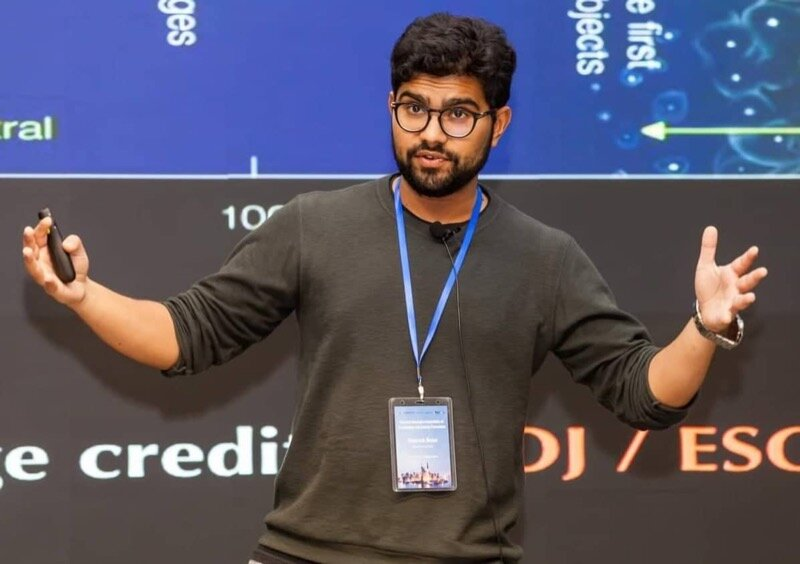
I am an astronomer at the Institute for Computational Cosmology, part of the Department of Physics at Durham University. Before this, I was an ITC Fellow at the Center for Astrophysics | Harvard & Smithsonian (2017-2021). I received my PhD at Durham (2013-2017), and my undergraduate degree in Physics at St. Catherine's College, University of Oxford (2009-2013).
My research makes use of some of the largest supercomputers in the world to study the formation of galaxies in our Universe. I am interested in trying to figure out new ways to test models of dark matter and gravity, and making predictions that could potentially be measured in the real distribution of galaxies in the cosmos. You can read more about my research interests here.
Besides research, I am passionate about education and outreach, and enjoy thinking about new ways of communicating science. Perhaps most importantly, my primary passion is football, and my outlook on life is usually dictated by Manchester United's performances at that point in the season.
Institute for Computational Cosmology, Durham University
July 2026 – Present
Institute for Computational Cosmology, Durham University
August 2023 – June 2026
Institute for Computational Cosmology, Durham University
October 2021 – August 2023
Faculty of Science, Durham University
January 2023 – March 2024
Center for Astrophysics | Harvard & Smithsonian
September 2017 – August 2021
Durham University
2013 – 2017
St. Catherine's College, University of Oxford
2009 – 2013
2021 – 2028
Awarded an independent research fellowship for the programme entitled "Fundamental Cosmology in the Era of Surveys: a Multi-scale Numerical Campaign"
2023
Recognising the most cited papers from North America published across the entire IOP Publishing journal portfolio within the past three years (2020 to 2022), and also featuring in the top 1% of most cited articles in the Astronomy and Astrophysics subject category; awarded for co-authored publication "Rapid Reionization by the Oligarchs"
2021
Rewarding 'new ideas or discoveries that have the potential to produce a breakthrough advance in our understanding of the origin, structure, and evolution of the universe'; awarded for co-authored publication "First star-forming structures in fuzzy cosmic filaments"
2018
Awarded for the 'best doctoral thesis in astronomy and astrophysics in the UK'
2018
Award recognising 'outstanding PhD research' internationally
2018
Awarded for the 'best PhD in Physics using computational methods'
View my complete publication list on NASA ADS
A selection of papers I have led and contributed to, spanning my main research themes and ordered roughly by citation impact. For the complete list, see NASA ADS or Google Scholar.
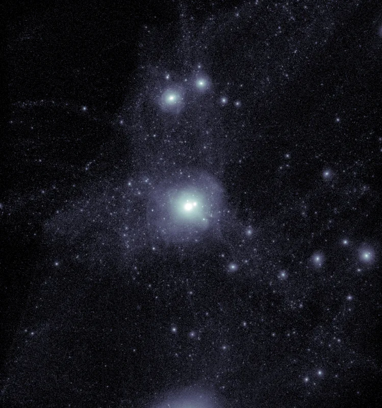
What is the identity of the dark matter that dominates the gravity of our Universe? How do the properties of the particle affect the formation of galaxies in our cosmos? By confronting theoretical data with ever more precise observational data, we can hope to one day pin down the nature of this most enigmatic component of our Universe.
My publications on dark matter →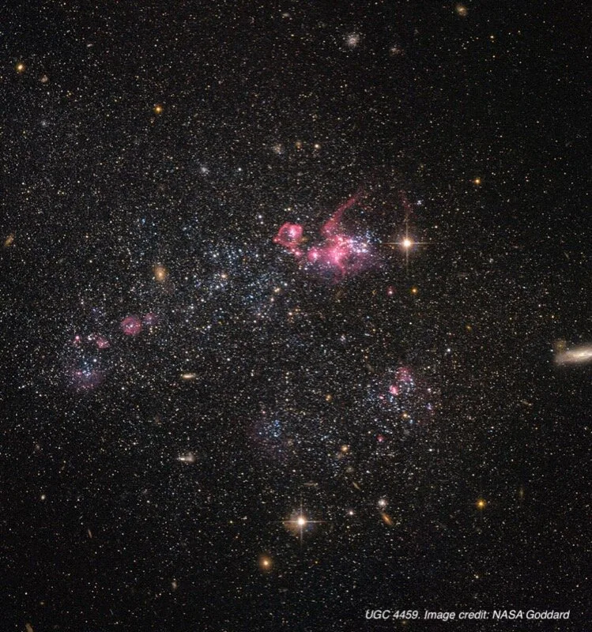
The Milky Way and its faint, neighbouring satellite galaxies offer some of the best laboratories for constraining the properties of dark matter, and provide us an opportunity to understand how the first generation of galaxies formed.
My publications on near-field cosmology →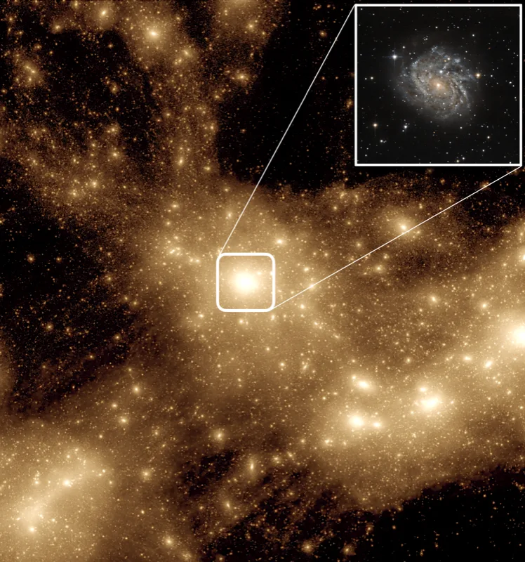
While our goal as cosmologists is to infer the underlying structure of the Universe, all we observe is the observable galaxy population. What determines the mapping between the luminous and the dark matter? How does the growth history of dark matter haloes influence the galactic populations that eventually reside within them?
My publications on the galaxy-halo connection →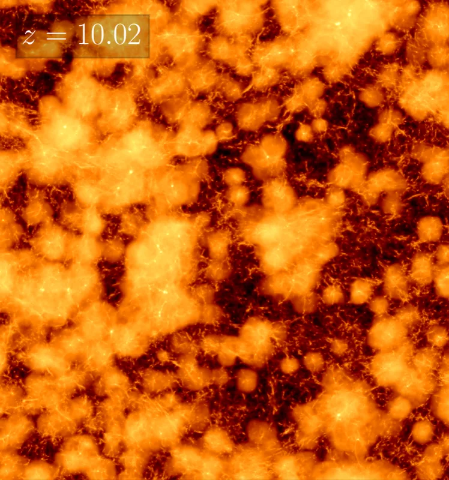
As the Universe emerges out of the cosmic dark ages, the first stars and galaxies begin to illuminate the cosmos through gradually expanding islands of radiation. This epoch of "cosmic dawn" encodes key details of identity of the dark matter, and plays a vital role in the distribution of the galaxies we observe today.
My publications on cosmic reionisation →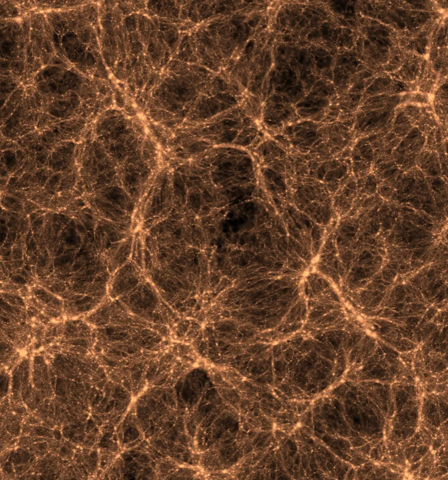
The Cosmic Web of structure spans several billions of light years and is dotted with galaxies; galaxies that we one day hope to map through large-scale redshift surveys. In the upcoming decade a plethora of new surveys will provide some of the tightest constraints on the cosmological parameters underpinning our Universe.
My publications on large-scale structure →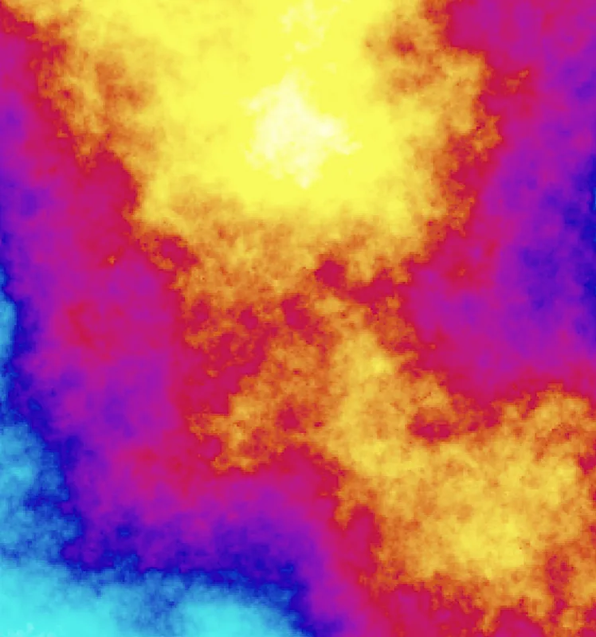
It is now well-established that expansion of our Universe is accelerating--but our theories for what drives this expansion are still woefully incomplete. Is it the vacuum energy in the form of a cosmological constant? Or does a complete picture of accelerated expansion demand a modification to the equations of General Relativity altogether?
My publications on the nature of gravity →Postdoc
Research interests: Cosmology, galaxy formation, large-scale structure, circumgalactic medium
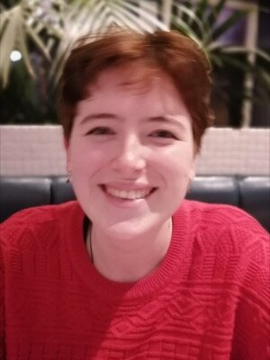
Final Year PhD Student
Research interests: Dwarf galaxies, dark matter, semi-analytic galaxy formation, black holes
Final Year PhD Student
Research interests: Dark matter, small-scale structure, cosmological zoom simulations, cosmic web
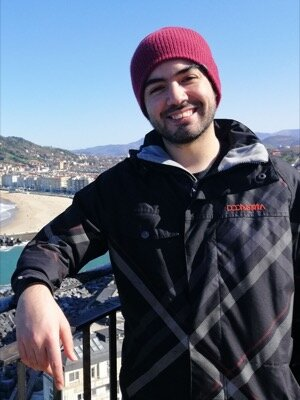
Final Year PhD Student
Research interests: Dwarf galaxies, cosmological hydrodynamical simulations, dark matter
Final Year PhD Student
Research interests: Cosmological simulations with GPUs, high-performance computing, dark matter
Final Year PhD Student
Research interests: Modified gravity, tests of gravity, hydrodynamical simulations, galaxy-halo connection
Visiting PhD Student; now KIAA Fellow at Peking University
Research interests: Dark matter, cosmological zoom simulations, numerical methods
Undergraduate at IISER (Kolkata, India); now PhD student at MPIA, Heidelberg
Research interests: Galaxy formation, effects of baryons on large-scale structure
Undergraduate at BITS Pilani (Goa, India); now PhD student at UCL
Research interests: Machine learning, artificial intelligence, cosmological simulations, modified gravity
Former ICC postdoc; now a postdoc at Universitat de València
Research interests: Dark matter, cosmological simulations, galaxy formation
I am not able to admit PhD students to Durham through personal correspondence. All applications are handled through the department's official process, and the available projects, entry requirements and deadlines are set out on the postgraduate opportunities page — please apply through that route.
The fellowship schemes that can be held in the department are listed on the postdoctoral fellowships page. If you are applying for one of these and would like me to act as your host at Durham, do get in touch.
I am a strong believer in communicating the marvels of science with the general public, and making cutting-edge research accessible to anyone. Throughout my career, I have been heavily involved in public engagement activities that seek to spark curiosity and inspire the next generation of scientists; the astronomy group at Durham, in particular, has a storied reputation for this. Below are some of the projects I am particularly proud to be a part of.
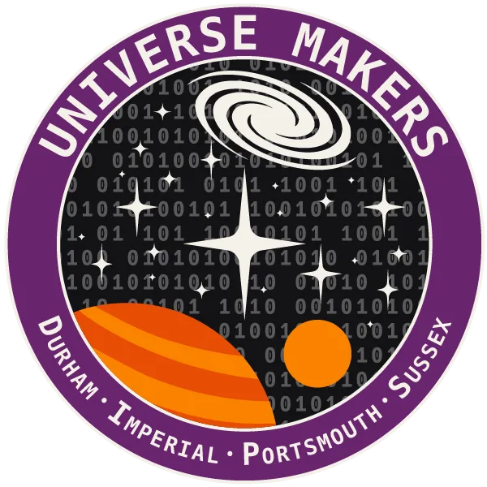
Royal Society Summer Science Exhibition 2026
I led this exhibit, selected for the 2026 Royal Society Summer Science Exhibition, in collaboration with colleagues from Durham, Imperial College London, Portsmouth, and Sussex. We recreate the Universe using state-of-the-art simulations that let visitors explore everything from planetary impacts to the formation of galaxies and the large-scale structure of the cosmic web. You can play with our browser-based UniverseEngine, at this link.
Explore Universe MakersWhere Football Meets Physics
I co-organise - with Alis Deason (lead) and Ryan Cooke - this interactive educational programme that brings Physics to life through the Beautiful Game. This was a partnership between Durham University, local schools, Durham Women's Football Club, and Education Durham. The project, which is aimed at primary school children, explores topics like the role of gravity in chip shots and the importance of probability in outwitting your opponent at penalties!
Explore Stargoal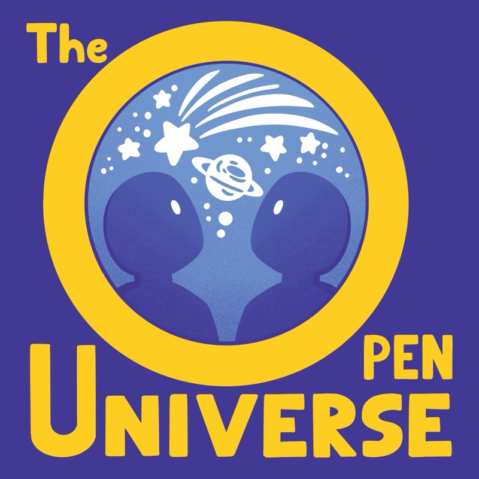
An unbounded journey through the archives of astronomy
With my friend and former colleague, Ana Bonaca, I co-host a podcast that covers historical figures, seminal papers, and contemporary topics in astronomy, making the wonders of the Universe accessible to everyone.
Listen NowRoyal Society Summer Science Exhibition 2016
Galaxy Makers was selected as one of the exhibits at the 2016 Royal Society Summer Science Exhibition, where we built interactive tools (including VR fly-throughs of the EAGLE simulations) to show how cosmological simulations can be used to understand the formation and evolution of galaxies in the Universe.
Explore Galaxy Makers+44 (0) 191 33 43359
OCW221
Department of Physics
Durham University
South Road
Durham, DH1 3LE
UK